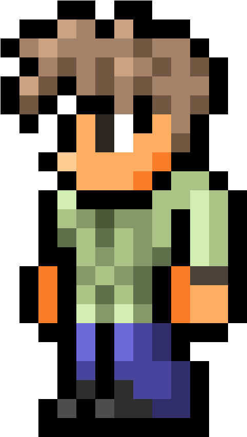

Juego clásico de tres en línea hecho con HTML, CSS y JavaScript puro. Permite reiniciar el juego y detectar empates o victorias.
🎮 Jugar | 📁 Código en GitHubJuego de memoria y concentración donde se voltean cartas para encontrar pares o secuencias hecho con HTML, CSS y JavaScript puro. Permite reiniciar el juego pero se baraja el tablero al hacerlo.
🎮 Jugar | 📁 Código en GitHubCalculadora básica hecha con HTML, CSS y jS. Una herramienta que realiza cuentas básicas. Proyecto con futuras mejoras.
🎮 Jugar | 📁 Código en GitHub